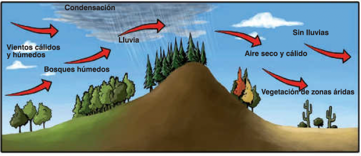

¿Cuáles son las relaciones?
Elige la posición correcta para estas opciones a la izquierda o a la derecha de la imagen.

Ladera húmeda
Ladera árida
Elige la posición correcta para estas opciones a la izquierda o a la derecha de la imagen.